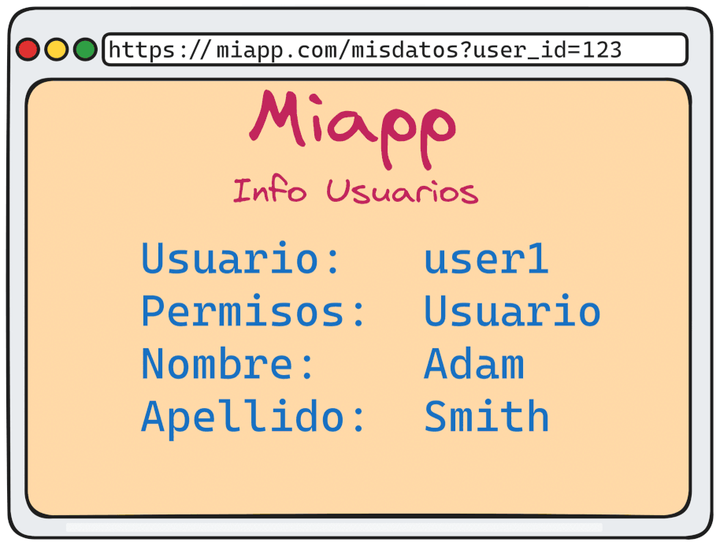

A01: Broken Access Control (Control de Acceso Roto) es el riesgo de seguridad número uno en el OWASP Top 10. Esta categoría cubre una amplia gama de vulnerabilidades que permiten a los usuarios eludir las políticas de control de acceso establecidas en una aplicación, lo que puede resultar en la exposición de datos sensibles, la manipulación de la funcionalidad de la aplicación o la ejecución de acciones no autorizadas.
¿Qué es el Control de Acceso?
El control de acceso es un mecanismo de seguridad fundamental que asegura que los usuarios puedan acceder solo a los recursos y realizar únicamente las acciones para las que están autorizados. Esto incluye:
- Autenticación: Verificación de la identidad del usuario.
- Autorización: Determinación de los permisos del usuario, es decir, lo que puede o no puede hacer en el sistema.
- Control de Sesión: Gestión de las sesiones de usuario para prevenir acceso no autorizado a recursos tras la autenticación.
Ejemplos Comunes de Fallos en el Control de Acceso

- Omisión de Control de Acceso en URLs:
- Un atacante podría modificar la URL de la aplicación para acceder a recursos restringidos, por ejemplo, cambiar
https://miapp.com/adminahttps://miapp.com/user/1. - Si el control de acceso no está implementado correctamente, el atacante podría acceder a funciones de administrador o ver información de otros usuarios.
- Un atacante podría modificar la URL de la aplicación para acceder a recursos restringidos, por ejemplo, cambiar
- Manipulación de Parámetros:
- Los usuarios podrían modificar parámetros en las solicitudes HTTP (GET, POST) para acceder a datos o realizar acciones no autorizadas.
- Ejemplo: Un usuario cambia el parámetro
user_id=123auser_id=124para ver la información de otro usuario.
- Falta de Control de Acceso en el Lado del Cliente:
- Confiar en controles de acceso implementados únicamente en el lado del cliente (JavaScript, HTML) es un error, ya que estos pueden ser fácilmente manipulados o ignorados por atacantes.
- Los controles de acceso deben siempre implementarse y validarse en el servidor.
- Escalada de Privilegios:
- Un usuario normal encuentra una forma de obtener permisos de administrador, permitiéndole realizar acciones críticas como modificar configuraciones del sistema o acceder a datos sensibles.
- Borrado de Referencias Directas Inseguras:
- Cuando la aplicación utiliza identificadores en la URL o formularios sin comprobar que el usuario tiene permiso para acceder al recurso asociado, un atacante podría adivinar o manipular estos identificadores para acceder a recursos no autorizados.
Impacto de los Fallos en el Control de Acceso
El impacto de los fallos en el control de acceso puede ser severo, incluyendo:
- Exposición de Datos Sensibles: Información privada de usuarios podría ser accesible para personas no autorizadas.
- Manipulación de Datos: Un atacante podría alterar o borrar información crítica.
- Compromiso de la Funcionalidad de la Aplicación: Funciones críticas podrían ser usadas indebidamente, como la desactivación de medidas de seguridad.
- Escalación de Privilegios: Usuarios con bajos niveles de acceso podrían obtener acceso administrativo, poniendo en riesgo toda la aplicación.
Cómo Mitigar los Riesgos de Control de Acceso Roto
- Implementación de Políticas de Control de Acceso en el Servidor:
- Las decisiones de control de acceso deben ser realizadas y verificadas en el servidor, no en el lado del cliente.
- Principio de Privilegios Mínimos:
- Asegurarse de que los usuarios solo tengan los permisos mínimos necesarios para realizar sus tareas.
- Revisión Regular de Permisos:
- Auditar regularmente los permisos de los usuarios para asegurarse de que estén alineados con sus roles y responsabilidades.
- Uso de Mecanismos de Autenticación y Autorización Probados:
- Utilizar frameworks y bibliotecas de autenticación y autorización bien probados y actualizados.
- Validación de Acceso en Cada Solicitud:
- Verificar que el usuario tiene permisos en cada solicitud que realiza, no solo al iniciar sesión.
- Testeo de Seguridad:
- Realizar pruebas de seguridad regulares, incluyendo pruebas de penetración, para identificar y corregir posibles fallos en el control de acceso.
Conclusión
El control de acceso roto es una de las vulnerabilidades más críticas y comunes en aplicaciones web. Asegurar que los mecanismos de control de acceso estén correctamente implementados y revisados regularmente es esencial para proteger la integridad, confidencialidad y disponibilidad de la información y funcionalidades en una aplicación.